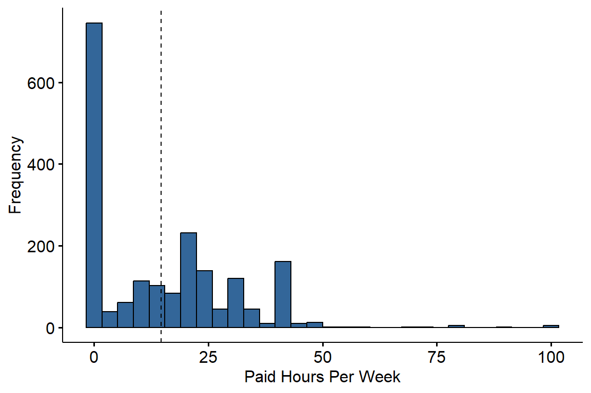
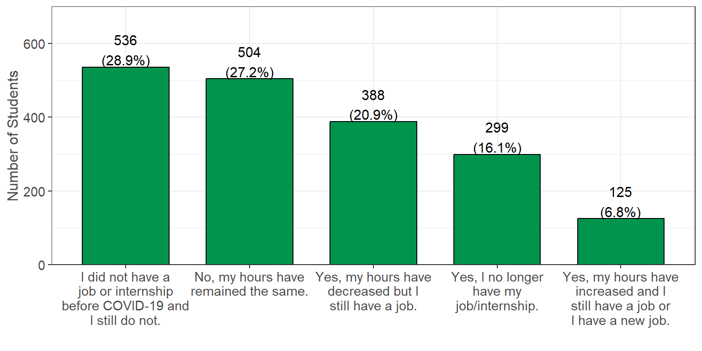
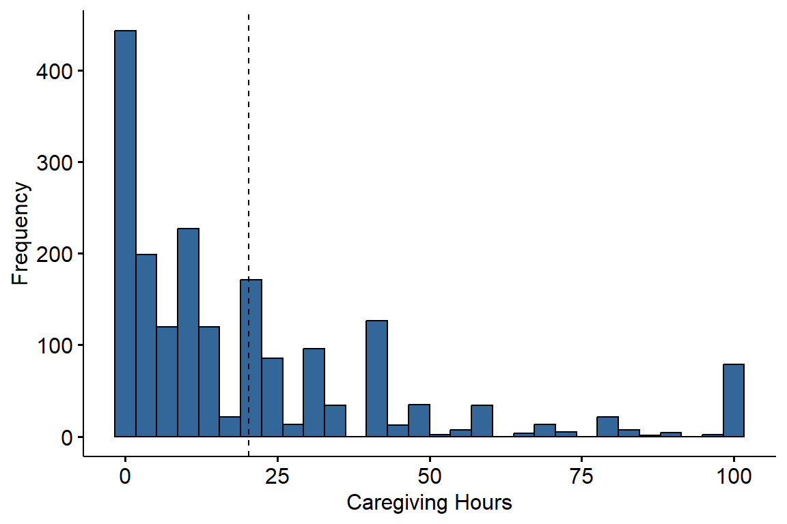
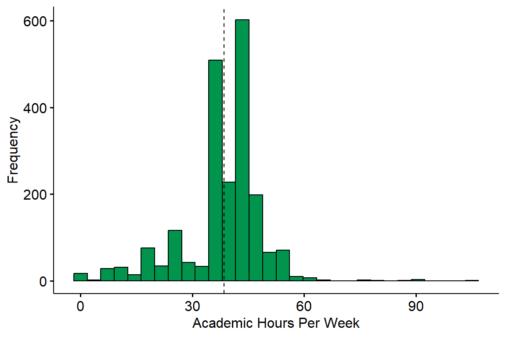
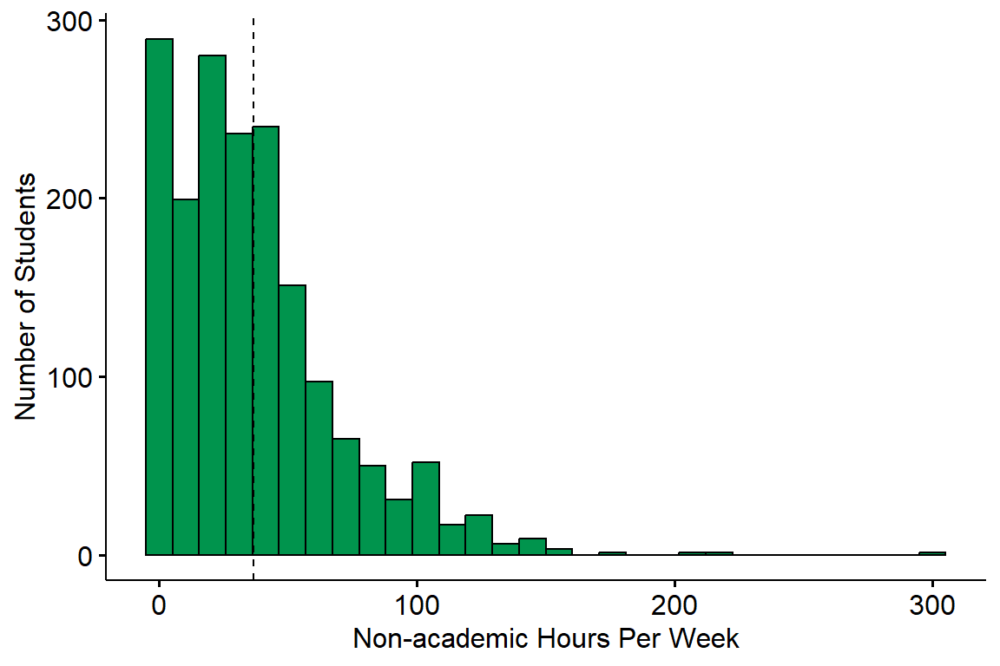
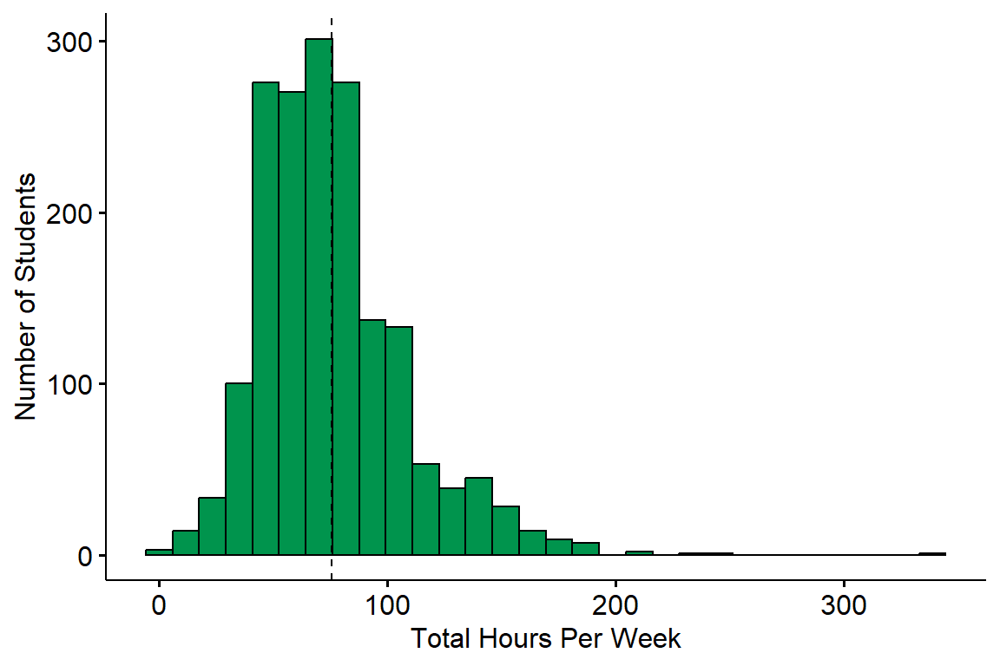
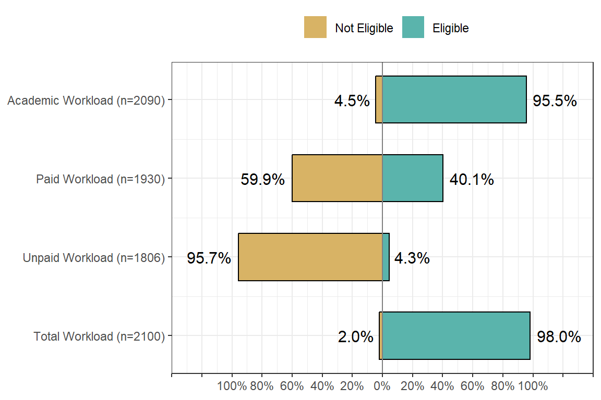

Workload
The following questions were asked in regards to the weekly workload taken on by students. This includes work from both paid/unpaid jobs, as well as time spent caregiving for a family member. Students academic workload is also looked at in order to see the hours spent each week on school work, as well as looking at the combined hours across academic and non-academic responsibilities.
Weekly Paid Work Hours
Estimate the number of hours you work in a PAID job (for example, server at a restaurant, office assistant, etc.) or paid internship (for example, training, shadowing, or practicum) per week. (n=1930, 91% of 2110 reporting).
The data indicates that the majority of survey participants work either part-time or not at all. Only a small number of participants are considered to be working full-time (40 or more hours per week). Below is a breakdown of the exact paid hours worked by survey participants.
Impact of COVID
Have the hours you work in a PAID job or internship changed due to COVID-19? (n=1852, 88% of 2110 reporting).

With the impact of COVID, the data indicates that most employed survey participants were able to keep their current paid jobs with only slight changes. 388 students had their hours decrease, 504 students maintained the same hours, and 125 students had their hours increase. There was also 299 students who claimed that they no longer had their paid position due to the impact of COVID, while 536 students also claimed that they did not have a paid position before COVID.
Unpaid Work Hours
Estimate the number of hours you work in an UNPAID internship (for example, training, shadowing, practicum, and/or volunteer, etc.). Do not combine with answers above. (n=1806, 86% of 2110 reporting).

We can see that the majority of survey participants (1387) do not work an unpaid job. A small number of participants work part-time at an unpaid job and only a select few work full-time at an unpaid job. Below is a breakdown of the number of unpaid hours worked per week.
Unpaid Caregiving Hours
Estimate the number of hours you spend each week on unpaid family obligations (for example, taking care of younger siblings, preparing family meals, running errands for the family, etc.). (n=1880, 89% of 2110 reporting).

The data indicates that the majority of survey participants do spend some time each week caring for family members. A minority (431) of participants estimated that they spent 0 hours per week for family obligations. There are also around the same number of participants who estimated they work full-time (40 or more hours per week) on these family obligations. Below is a breakdown of these unpaid hours spent on family obligations each week.
Academic Workload

The average number of academic hours worked per week (denoted by the dotted line) is 38.57, while the median is 39 hours. The majority of students do seem to be working 36 or more hours per week, with 36 hours being most common (502 people) and 45 hours following that (464 people).
Non-Academic Workload
Below is a combination of both paid and unpaid hours worked by students to get a further understanding of the workload participants face on a weekly basis. (n=0, NA of 2110 reporting).

The average number of total hours worked per week (denoted by the dotted line) is 35.98, while the median is 30 hours. The majority of students do seem to be working under 40 hours per week in total, with 0 hours being most common (258 people) and 40 hours following that (121 people).
Total Workload
Below is a combination of all worked hours per week, both academic and non-academic. This includes units (3 hr/unit), paid, and unpaid worked hours (n=2095, 99% of 2110 reporting).

The average number of total hours worked per week (denoted by the dotted line) is 72.52, while the median is 68 hours. The majority of students do seem to be working over full-time in total, with 45 hours being most common (83 people) and 36 hours following that (81 people).
CalFresh Workload
People are required to meet a certain work criteria in order to receive CalFresh benefits. All able-bodied adults are required to work a minimum of 80 hours per month, which can be broken down into roughly 20 hours per week. This can be either paid or unpaid work, and more information on this requirement can be found on the Department of Social Services website. If you are an student, you may be enrolled in at least 6 academic units or more (equivalent to 18+ hours per week of academic workload) rather than having a paid/unpaid job. For more information on student eligibility, see the College Student Eligibility requirements on Chico State’s website.
The below graphs breaks down if a person meets the workload requirements based solely on one of the following criteria:
- Academic workload - enrolled in 6 or more units (18 or more hours).
- Paid Workload - working 20+ weekly hours at a paid position.
- Unpaid Workload - working 20+ weekly hours at a unpaid position.
- Total Workload - working 20+ weekly hours in total (combination of academic, paid, and unpaid).
Note: people with a workload of 0 hours were included in the graph and analysis.
